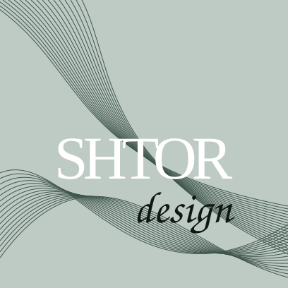

01
Портьеры и тюль
Слои, фактуры и правильная посадка ткани.

067 981 5876 Вызвать дизайнераТекстильный дизайн интерьера
Подбираем ткани, проектируем оформление окон, шьём по индивидуальным размерам и аккуратно монтируем готовое решение.
Решения
Не продаём ткань «метрами». Собираем решение под свет, архитектуру, мебель и характер комнаты.
Слои, фактуры и правильная посадка ткани.
Лаконичное решение для кухни, спальни и кабинета.
Механика, которая не спорит с интерьером.
Подушки, покрывала и детали в одной палитре.
Портфолио SHTOR design
Собрали структуру так, чтобы клиент быстро находил близкий ему интерьер: гостиная, спальня, римские шторы, кухни и детали текстиля.
Ткани и фактуры
Один оттенок по-разному живёт утром, вечером и при искусственном свете. Поэтому ключевой подбор делаем в самом интерьере.
Заказать выезд с образцамиПроцесс
Смотрим интерьер, задачу, фото и пожелания.
Дизайнер привозит образцы тканей и делает точные замеры.
Сочетаем ткань, карниз, высоту, складку и детали.
Контролируем посадку, обработку и соответствие проекту.
Устанавливаем карнизы, навешиваем и отпариваем текстиль.
SHTOR design
Текстиль должен ощущаться естественной частью интерьера: спокойно, точно и без лишнего декора ради декора.
«Хорошие шторы не должны кричать. Они должны делать интерьер собранным.»
Консультация
Свяжитесь удобным способом или оставьте заявку. Работаем в Одессе и Одесской области.